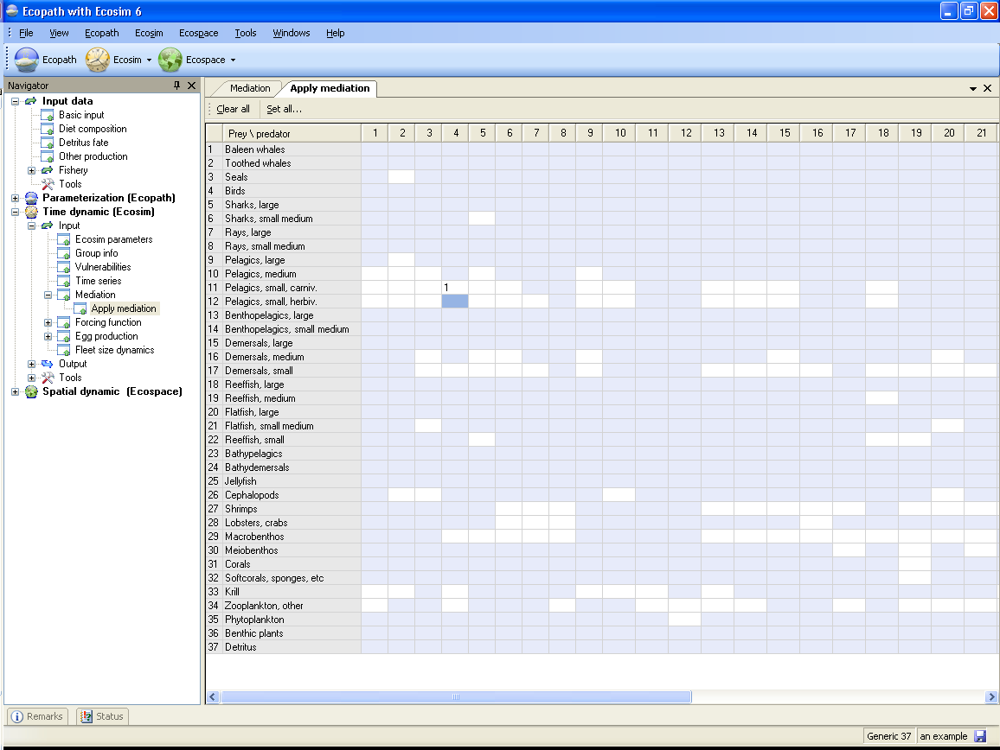
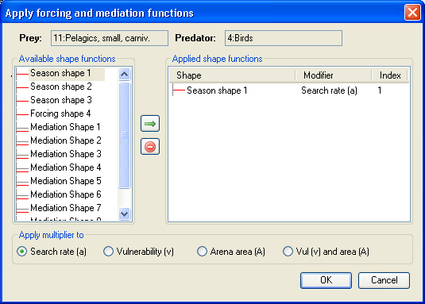

The Apply mediation form (Time dynamic (Ecosim) > Input > Mediation > Apply Mediation) is used to apply the trophic mediation functions you defined using the Mediation form.
Before using the Apply mediation form, you must first define at least one trophic mediation function following the instructions for using the Mediation form. It is recommended you read the introductory material on Linking mediation and time forcing functions to trophic interaction rates to understand how trophic mediation functions are applied in Ecosim.
Selecting Apply mediation opens a form that consists of a grid representing predator (j) / prey (i) interactions (Figure 8.13). Predators are represented in columns with prey in rows. Predator/prey interactions, as defined in the Diet composition are indicated by white cells.
To apply a trophic mediation function, select the i,j cell representing the predator/prey interaction to which you wish to apply the function. This will open the Apply forcing and mediation functions dialogue box (Figure 8.14). The affected prey and predator group will be displayed at the top of the form.
Next, select the parameter to which the mediation multiplier is to be applied using the radio buttons at the bottom of the dialogue box. There are four possible options:
The selected modifier will be shown in the window Applied shape functions window (Figure 8.14).
Next, select the desired mediation shape from the Available shape functions window at the left of the dialogue box by clicking the green arrow. This will move the shape function into the Applied shape functions window. You can remove a shape from this window by clicking the remove button immediately below the green arrow. Note that a common form is used to apply Mediation and Seasonal/Forcing functions. Do not select a seasonal or forcing function.
Finally, click OK. You should see the number of the mediation function (preceded by ‘M’) you selected in the predator/prey cell.
Note that you can apply up to five seasonal, forcing and/or mediation functions to each predator-prey interaction.
You can clear all applied seasonal, forcing and/or mediation functions from the predator-prey grid by selecting Clear all from the top of the Apply forcing function form.
To apply a mediation function to the interactions between a particular predator and all of its prey species, click on the number of the predator at the top of the form. When the Apply forcing and mediation functions dialogue box opens you will see a message at the top of the box reflecting that all the prey are affected. Similarly, to apply a mediation function to the interactions between a particular prey species and all of its predators, click on the number of the prey at the side of the form to open the Apply forcing and mediation functions dialogue box. Follow the steps above to select shape function(s).

Figure 8.13

Figure 8.14.